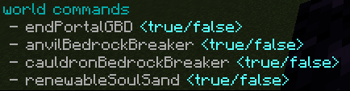
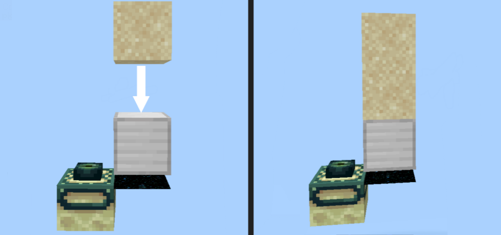
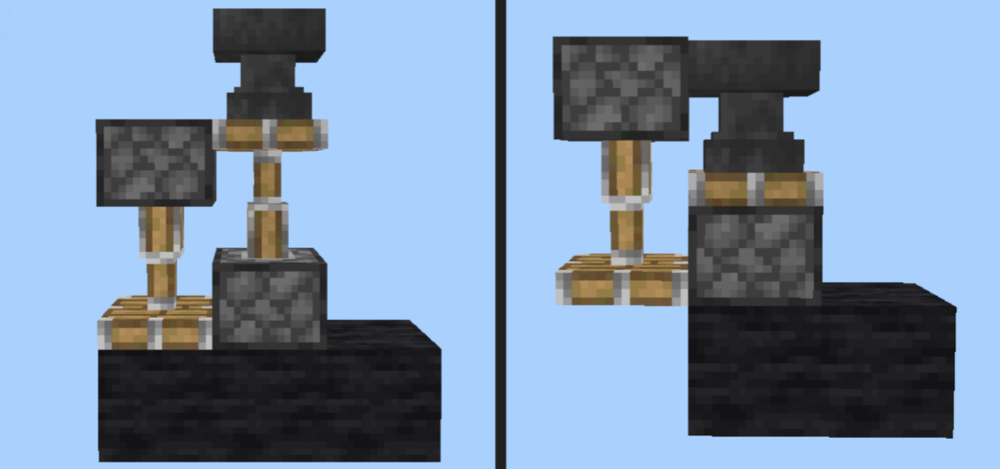
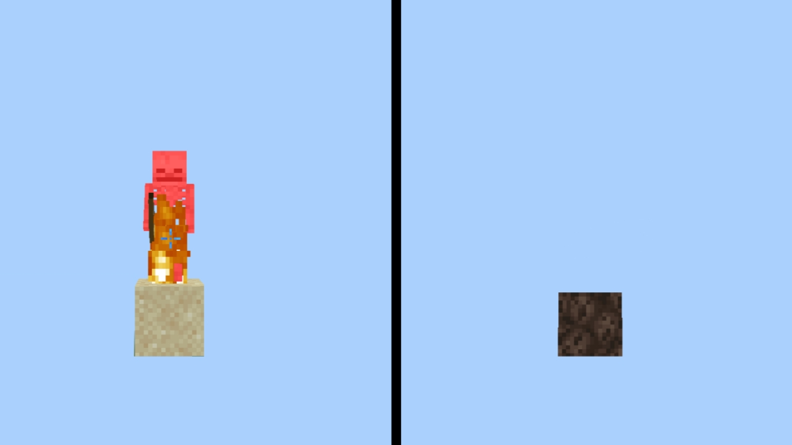

Módulo World
¿Qué es?
El módulo World es el encargado de la manipulación de eventos del mundo, siendo este el responsable de agregar funciones enfocadas a bloque dentro del juego.
Comandos
Los comandos disponibles en el módulo world son los siguientes:

Cada comando puede habilitar o deshabilitar una función del módulo.
Funciones
End Portal GBD
En minecraft bedrock, en anteriores versiones era posible duplicar bloques de gravedad (arena, grava, concreto, etc) mediante un portal del end, esto sucedia
Sapling proporciona la capacidad de volver a habilitar una duplicación de bloques de gravedad similar a la de antiguas versiones, a continuación habrá un video de su funcionamiento.

Anvil Bedrock Breaker
En Minecraft han existido diferentes métodos para romper bedrock (bloque indestructible) mediante errores y exploits dentro del juego, actualmente no existen o no se han descubierto errores o exploits en las nuevas versiones, por lo que no es posible romper dichos bloques.
La finalidad de esta primera función es implementar una mecánica de ruptura basada en yunques y colisiones de pistones. En esta primera función, el método consiste en un simple paso: que un yunque caiga al lado de un pistón activo mirando hacia el bloque de abajo.

Cauldron Bedrock Breaker
Cómo se menciona anteriormente, se fueron arreglando los métodos de ruptura a medida de cómo se fue actualizando el juego, uno de los métodos que fueron solucionados fue el método del caldero y nieve en polvo.
La finalidad de esta segunda función enfocada a romper bedrock es regresar el error eliminado, a continuación habrá un ejemplo de su funcionamiento.

Renewable Soulsand
Con esta función se habilita la posibilidad de generar bloques de arena de almas cuando un esqueleto o zombie muere por quemadura encima de un bloque de arena.
